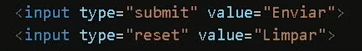
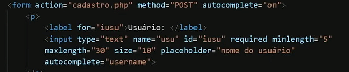
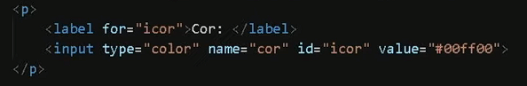
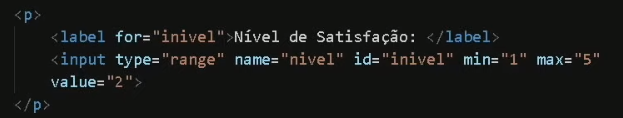
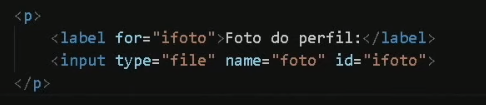

Para criar um formulários, utilizamos a tag <form> </form>, assim criando uma div semânticamente correta de um formulário.
Para criarmos a caixa de digitação escrevemos o input, temos diversos input sendo eles de textos, números, senhas e ai vai da nossa necessidade.
Exemplo:

Para desativarmos o autocomplete de preenchimento, devemos colocar ao lado da tag form o autocomplete = off.
Para enviarmos os dados do formulário, ao lado da tag form, devemos colocar o "action" e dentro desse action colocar a página de linguagem.
Devemos usar o label para fazer a ligação entre os elementos da página e do formulário
Exemplo:

Existem dois métodos para envios de formulários, por padrão ele vem no método GET
GET: Faz com que apareça o que foi buscado na barra de endereço; pode ser usado para quando não há solicitação de dados sensíveis podendo ser enviados somente até 3 mil letras.
POST: Faz com que seja oculto o que foi buscado na barra de endereço, porém não é totalmente seguro, usado para dados sensíveis.
os atributos são escolhidos pelo comando "type" depois do input, pode ser do tipo texto, senha, números e etc
Para tornar o preenchimento obrigatório, utilizamos a tag "required" no final do campo.
Placeholder: Texto que irá mostrar a caixa vazia para o usuário o que ele deve digitar
minlength: Mínimo de letras
maxlenght: Máximo de letras
Cria uma divisória semântica para opções em formulários criando um separador
Para fazermos uma caixa de seleção com o input:radio podemos fazer uma caixa de seleção que só pode escolher uma opção e não as duas, pra isso devemos usar o mesmo nome para ambas as opções
Se quiser uma opção já marcada, podemos deixar ativada a opção checked
Para criarmos uma seleção de cores que o usuário escolha, devemos utilizar o input do tipo color
Exemplo:

Para usarmos a barra de satisfação, devemos utilizar um input do tipo range, e para colocarmos delimitação usamos o min e max e já preenchido utilizamos o "value"
Exemplo:

Para criamos uma seletora de enviar arquivo, criamos o input do tipo file e devemos colocar como POST
Exemplo:
